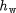
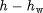
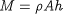
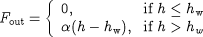

Using State-Transition Networks to model discontinuities
Discontinuities in the description of the physical behaviour of process systems may arise in different ways such as:
-
transitions from laminar to turbulent flow;
-
reversal of the direction of flow;
-
appearance and disappearance of thermodynamic phases;
-
equipment failure;
and many others.
State-Transition Networks (STNs) provide a general way of describing discontinuous systems. This concept is best introduced via an example. Consider the vessel depicted in the figure below. When the level of liquid in the vessel, h, is below the height of the weir, , no outflow is observed. When, on the other hand, the liquid level exceeds the weir height, the rate of outflow is assumed to be proportional to .
The mathematical model of the transient behaviour of this system can be written as follows:
Mass balance

Calculation of liquid level in the tank

Characterisation of the output flowrate

We note that two different sets of equations are needed to describe the behaviour of this system depending on whether the level of the liquid is above or below the weir. Thus, the system may exist in two distinct states, Flow and NoFlow, that correspond respectively to whether or not liquid flows over the weir. At any particular time, the system is in exactly one of these states. However, transitions from one state to the other will occur instantaneously if certain conditions are met. For example, if, while the system in state NoFlow, the height of the liquid exceeds that of the weir, the system will instantaneously jump to state Flow. Conversely, if, while the system in state Flow, the height of the liquid drops below that of the weir, the system will instantaneously jump to state NoFlow.
The above situation can be represented graphically in terms of an STN as shown in the figure below. The two circles (or ellipses) denote the two possible system states; for convenience, the form of the discontinuous equation (involving the characterisation of the output flowrate) in each of these states is also shown within these circles.
On the other hand, the mass balance and liquid level equations do not appear in this figure as their form is independent of the state the system is in. The transitions between the two states are also shown in figure as arrows connecting the corresponding circles. Again for convenience, each arrow is labelled with the logical condition that triggers the corresponding transition.
The STN represents a reversible, symmetric discontinuity because:
-
the system may jump from either of the two states to the other and,
-
the logical condition for one the two transitions is the exact negation of that for the other.
An example of a different type of discontinuity is shown in the figure below. Here, a vessel is fitted with a bursting disc. The disc can either be intact (with no gas flow from the vessel) or burst (with gas venting from the disc to the flare stack). This gives rise to two distinct system states (Intact and Burst). As in the previous example, some of the equations that describe the system take a different form in each of these states while some others remain unchanged. A transition from Intact to Burst occurs when the pressure in the vessel rises above the set pressure and the disc shatters. The resulting outflow of gas will then cause an reduction of the pressure which, eventually, may drop below its set value. However, the system cannot return to its Intact state once the disc has shattered - unless it is repaired as a result of an external action. Consequently, this is an example of an irreversible discontinuity.
A final example is that of a vessel fitted with a safety relief valve (see figure below). The valve can be either open or closed, which again gives rise to two system states (Open and Closed). A transition from the Closed to the Open state occurs when the pressure in the vessel rises above the set pressure, while a transition from the Open to the Closed state occurs when the pressure falls below a (lower) reset pressure. This is a reversible, asymmetric discontinuity because, although there are possible transitions in both directions, the two transition conditions are not the exact negation of each other.
We note that, in all three examples, only a subset of the model equations are directly related to the discontinuity and change from one state to another. The rest of the equations remain unchanged regardless of the state the system is in. Summarising, a discontinuity in the physical behaviour of a system gives rise to a number of possible system states. Naturally, at any given time, the system can be in exactly one of these states. Some of the equations that determine the behaviour of the system hold irrespective of the system state. However, some others take a different form in each state. Transitions between the different states take place when certain logical conditions are satisfied. A system may exhibit more than one physical discontinuity described by multiple STNs and/or more than two states within the same STN. For instance, a more detailed model of the weir vessel would seek to characterise the nature of the fluid flow in the outlet pipe. This would give rise to three system states, i.e. Laminar, Turbulent and Choked. A complex STN for a hypothetical system is depicted in the figure below. Here, the system exhibits two separate physical discontinuities involving three and two possible states respectively.
-
Equations 1, 2 and 3 remain unaffected by the discontinuities and are valid throughout.
-
Equation 4 is affected by the first discontinuity and is written as 4a, 4b or 4c, depending on the state of the system.
-
Equations 5 and 6 are affected by the second discontinuity and are written as 5a, 5b and 6a, 6b in each of the two states respectively.